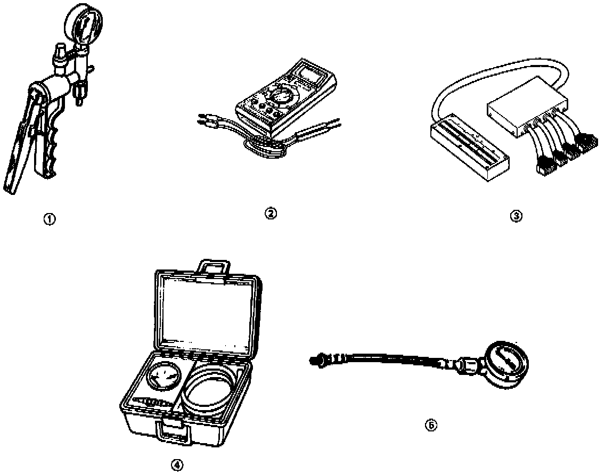

Powertrain Management: Tools and Equipment

Ref. No. Tool Number Description Q'ty
1. A973X-041-XXXXX Vacuum Pump/Gauge 1
2. KS-AHM-32-003 Digital Multimeter 1
3. O7LAJ-PT3O1OA Test Harness 1
4. O7JAZ-001OOOB Vacuum/Pressure 1
Gauge 0-4 in. Hg
5. 07408-0040001 Fuel Pressure Gauge 1